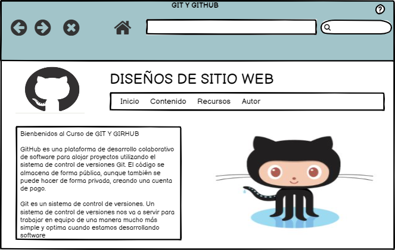

GIT Y GITHUB
Objetivo General
Diseñar un Objeto Virtual de Aprendizaje con contenido acerca de GIT Y GITHUB en el curso de diseño de sitios web
Objetivos Especificos
- Conocer la función de GIT Y GITHUB en el diseño de sitios web
- Identificar los beneficios de utilizar GIT Y GITHUB
- Definir los procesos que se llevan a cabo en GIT Y GITHUB
Materiales
Sitios Web: Introducción a GIT Y GITHUB https://desarrolloweb.com/articulos/introduccion-git-github.html
Videos: https://www.youtube.com/watch?v=YlBy34ECh2s https://www.youtube.com/watch?v=ARmThT1BVy4
Libro: Pro GIT enlace: https://progit2.s3.amazonaws.com/en/2016-03-22-f3531/progit-en.1084.pdf
Maquetación

contenido
Sección
1. Este artículo sirve como introducción a este tipo de herramientas de manera global, pero también para conocer uno de los sistemas de control de versiones existentes
en la actualidad que se ha popularizado tremendamente, gracias al sitio Github. Fuente:
https://desarrolloweb.com/articulos/introduccion-git-github.html
2. Se trata de Git, el sistema de control de versiones más conocido y usado
actualmente, que es el motor de Github. Fuente:
https://kinsta.com/es/base-de-conocimiento/git-vs-github/
Funciones de GIT Y GITHUB
GIT: Es muy potente, fue diseñada poe Linus Torvalds, no depende de un repositorio central,
Es un software libre, Es muy rapída
GITHUB:
GitHub es uno de los sistemas de revisión
más populares usado por desarrolladores.
Grandes proyectos de código abierto tienen un
espacio en GitHub y pueden ser usados por
distintos desarrolladores alrededor del mundo
pues los autores suelen incluir toda la documentación
relacionada, como es de esperarse de un proyecto de código abierto.